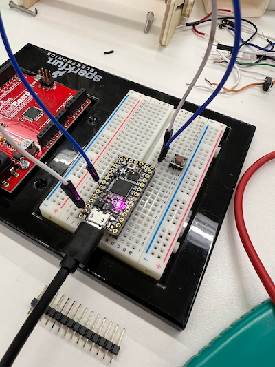

<div class="textcontainer">
<p class="margin"> </p>
<h3>Final Project: A Custom Macro Keypad</h3>
<p class="margin"> </p>
<div class="flexrow">
<a id="btn" href="" download>Download the files used for my final project!
</a>
</div>
<p class="margin"> </p>
<h4>Phase 1: Brainstorming</h4>
I had been planning to make this for my final project since I applied to the course.
I had this idea because outside of classes, my main activity is doing
lighting design and programming for performances on and off Harvard's campus.
Macro keypads are a common sight among professional lighting programmers because
the control software that we use for theatrical lights has a command-line interface,
and some of the more advanced or specialized commands can get very long. It's far
more efficient to be able to trigger common commands with a single button press,
especially the longer commands that take a while to type out.
In the brainstorming phase, my specifications for my final project were nebulous.
The base functionality I wanted was to have several buttons to trigger macros, plus
a "program" button that would let you capture key press sequences from your computer's
keyboard and dynamically assign that to a specific button. However, I also had
other features that the keypad would ideally include:
<ol>
<li>Two encoder wheels, for controlling what are called "Non-Intensity Parameters"
(like a light's pan, tilt, and color)</li>
<li>A slider or button to switch between different "profiles," so that the
keypad buttons could be mapped to twice or three times as many macros</li>
<li>A small display screen, to provide user feedback on the status of the
keypad or what macro was just triggered.</li>
</ol>
During this phase, I made several sketches and diagrams by myself and while talking
to Ibrahim and the other lab TFs to try to pin down how I wanted my project to end up.
<p class="margin"></p>
<div class="flexrow">
<img src="" alt="a piece of paper with some diagrams drawn in black marker">
<img src="" alt="a screenshot of a standard three-view multiview drawing, showing a small keypad with two dials">
</div>
<p class="caption">Some early diagrams of what the keypad layout could be.</p>
<p class="margin"></p>
<p class="margin"></p>
<h4>Phase 2: Prototyping</h4>
The prototyping phase of this project really kicked off with my
<a href="../07_outputs/index.html">Minimum Viable Product</a> assignment during
week 6 of the course. You can read up on the outcome of my MVP on its page, but
essentially at the end of week 6 I had a good starting foundation for the macro
functionality of my keypad. I had also realized several problems, though:
<ul>
<li>I didn't actually know how to key my computer to register an Arduino board
as a keyboard-like input device, as opposed to an Arduino.</li>
<li>I also didn't know how to record key presses from my computer's keyboard
and send them back to the Arduino.</li>
<li>I really wasn't sure what the circuit architecture of my final project
would look like.</li>
</ul>
With the help of Bobby and the other TFs, I figured out that I could use the
Arduino Keyboard library to send key presses to my computer. Getting the computer
to talk back to the Arduino was looking more complicated, so I ended up scrapping
the dynamic progammability aspect in favor of just setting what the macros did
ahead of time in the Arduino code. For my MVP, I had used an Arduino Uno, but then
I switched to an ESP 32 C3 Dev Module; once I figured out I would be using the
Keyboard library (which isn't supported on ESP 32), I switched to an Adafruit
ItsyBitsy M4 Express that I found in the lab, which worked wonderfully.
<p class="margin"></p>
<div class="flexrow">

</div>
<p class="caption">I set up a test circuit with just the ItsyBitsy and a single button to make sure my wiring logic was correct.</p>
I also wanted to switch to a different kind of button. My MVP used the small brown
breadboard buttons that we had in the lab, but I wanted to use the larger black
buttons because they looked more polished and had a nicer click action. However,
trying to run my code with the black buttons was producing odd behavior, where
my key presses would trigger infinitely half the time and not trigger at all the
other half the time. Eventually, I figured out that the black buttons were toggle
buttons, not push buttons, so instead of completing a circuit while they were held
down, they connected and disconnected the circuit each time they were pressed.
I decided to upgrade my circuitry to a solderable breadboard for a more polished
look. Because of the size of my buttons and the number of pins on the board, I
had to use two breadboards, but I still wanted the size of the keypad to be pretty
small, so I went with a double-decker approach. I planned to put the Arduino on
the bottom layer and wire it to buttons on the top layer, then stack the boards
by screwing them together with a brass spacer in between. To hold the stack in place,
I would design an enclosure that the boards could screw into. However, I was worried
about soldering the wrong pins together, so I soldered all the buttons down first
so I could double-check my circuitry pattern.
<p class="margin"></p>
<div class="flexrow">
<img src="" alt="an Arduino connected to a button soldered onto a breadboard">
<img width="500" height="500" src="undo_demo.gif" alt="a screen recording of a person typing and deleting text">
</div>
<p class="caption">For testing the buttons, I wrote a version of my code with just a single macro button assigned to the 'Undo' command, then connected the Arduino pin to each button in turn to test the solder joints.</p>
I noticed that on every other press the black buttons had a tendency to trigger
twice; this behavior is visible in the gif above. PK helped me open up one of the buttons to take
a look at the mechanism, where we found that the reason for this was because each press
rotates a metal disc so that it does or doesn't connect the two terminals of the
button; when the button is in its "on" state, with the circuit closed, a half-press
will disconnect the circuit and then re-connect it, thus registering as two presses.
I solved this in my code by adding a cooldown timer to each button so they could only
be pressed once every 100 milliseconds.
<p class="margin"></p>
<div class="flexrow">
<img src="" alt="close-up photo of a button with the outer shell removed">
</div>
<div class="flexrow">
<img src="" alt="close-up photo of a button mechanism with the circuit open">
<img src="" alt="close-up photo of a button mechanism with the circuit closed">
</div>
<p class="caption">Looking at the button mechanism revealed that this was a hardware problem, not a software one.</p>
<h4>Phase 3: Final Planning</h4>
<h4>Phase 4: Assembly</h4>
<h4>Phase 5: Testing</h4>
<p class="margin"> </p>
<div class="flexrow">
<img src="buzzer_circuit_1.png" alt="a photo of an Arduino attached to a piezo buzzer">
<img src="buzzer_circuit_2.png" alt="another photo of the same circuit">
</div>
<p class="caption">The buzzer circuit setup.</p>
</div>